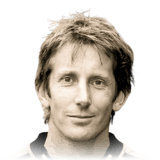
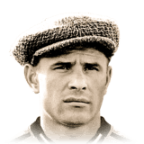
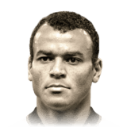
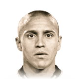
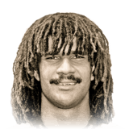
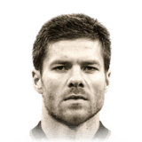
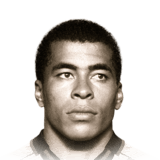
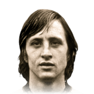

GOLEIROS
Edwin van der Sar
Contratado pelo Manchester United para resolver o problema do time na posição, a passagem de van der Sar pelo United foi marcada por muitos jogos sem sofrer gol e vários troféus. O momento mais marcante de sua passagem em Manchester foi na final da Champions League 2007/08, fazendo uma defesa na disputa de pênaltis para garantir a taça para o United.
Lev Yashin
Lev Yashin revolucionou a forma de como os goleiros de hoje em dia jogam. Chamado de "Aranha Negra" por se vestir todo de preto, Yashin também era um especialista em defender penâltis. O ápice de sua carreira veio em 1963, quando Yashin tornou-se o único goleiro da história a ganhar o cobiçado prêmio Ballon d'Or.
Petr Cech
Aos 21 anos, Petr Cech veio do clube francês Rennes para o Chelsea e conquistou sucesso imediato, na campanha de 2004/05, estabeleceu um recorde de 24 jogos sem sofrer gol e ajudou os Blues a conquistar o primeiro troféu da primeira divisão em 50 anos.
DEFENSORES
Cafu
Cafu era considerado um dos melhores laterais direitos do mundo quando ajudou a Roma a levantar a taça da Serie A Tim em 2001. Em 2002 acabou sendo um momento de coroação em sua carreira em que disputou todos os minutos da Copa do Mundo da FIFA™ e levou sua seleção à glória como capitão.
Paolo Maldini
Ao final dos anos 1990, Paolo Maldini já tinha a reputação de ser um dos maiores zagueiros de sua geração. Em 1999, com a liderança de Maldini, o Milan conquistou o 16º título da Serie A TIM.
Roberto Carlos
Em 1997, Roberto Carlos marcou um dos maiores gols de falta de todos os tempos, em uma cobrança memorável contra a França. A bola aparentemente ia muito para fora, até fazer uma curva repentina para a esquerda e morrer na rede. No ano seguinte, Roberto Carlos ajudou o Real Madrid a vencer sua primeira Champions League em 22 anos. Ele ainda foi vice-campeão na Copa do Mundo da FIFA™ de 1998 com o Brasil.
MEIO-CAMPISTAS
Kaka
Kaká já era peça fundamental do time do Milan em 2006 e teve sua melhor temporada em 2006/07. Kaká se tornou a referência do ataque do Milan e foi artilheiro da UEFA Champions League vencida pelo Milan, dando ainda a assistência ao gol da vitória na final contra o Liverpool. A fase brilhante de Kaká rendeu a ele vários prêmios de Melhor Jogador do Ano, incluindo o cobiçado Ballon d'Or de 2007.
Ruud Gullit
Ruud Gullit chegou ao Milan em 1987, ele foi peça central do período de domínio do clube, ajudando a vencer três títulos da liga italiana, duas copas europeias e vários outros títulos. Gullit venceu o cobiçado Ballon d'Or em 1987 e foi segundo colocado na premiação no ano seguinte.
Xabi Alonso
Ao longo da carreira Xabi Alonso era figurinha certa nas convocações da Furia em seu período mais vitorioso. Ele fez parte da geração de ouro da Espanha, que dominou o futebol mundial, e conquistou duas UEFA European Championship consecutivas, em 2008 e 2012. O apogeu de sua carreira, no entanto, veio em 2010, quando a Espanha conquistou a Copa do Mundo da FIFA™, com uma vitória por 1 a 0 sobre os Países Baixos na final.
ATACANTES
Frank Ribery
Franck Ribéry passou boa parte de sua ilustre carreira na Bavária, consolidando o status de lenda do esporte nesse período. O francês foi figura central do Bayern de Munique do início dos anos 2010, principalmente na famosa campanha de 2012-2013, quando o Bayern abocanhou quatro títulos. Embora o time como um todo tenha brilhado na temporada, Ribéry foi o grande destaque, recebendo os prêmios de Jogador do Ano da UEFA e da Bundesliga.
Jairzinho
Jairzinho assumiu a vaga como ponta direita da Seleção após a aposentadoria de seu ídolo Garrincha, em 1966. Nos anos seguintes, ele evoluiu na posição e foi uma das estrelas da Copa do Mundo da FIFA™ de 1970, no México. Jairzinho brilhou e balançou as redes em todos os jogos disputados pelo Brasil na Copa, incluindo um golaço em jogada individual contra a checoslováquia e um gol na vitória por 4 a 1 sobre a Itália, na final que selou a conquista da Taça Jules Rimet.
Johan Cruyff
Ao disputar o torneio sem muitas expectativas, a Holanda levantou a taça da Copa do Mundo da FIFA™ de 1974, Johan Cruyff foi o catalisador da Holanda, onde a seleção apresentou ao mundo seu estilo de jogo revolucionário, o "Carrossel Holandês". Em vez de jogar centralizado, Cruyff teve uma função livre, surgindo em diferentes posições de ataque, pressionando os oponentes enquanto a "Laranja Mecânica" chegava à final com estilo. O desempenho excepcional de Cruyff he concedeu o prêmio Ballon d'Or, apesar da derrota sofrida da Holanda.
VERSÕES DE OUTROS EAFC/FIFA
FORMULÁRIO
Após uma breve descrição de alguns Icons presentes no jogo EAFC 24, aqui está um formulário para escolher seus jogadores favoritos por posição.